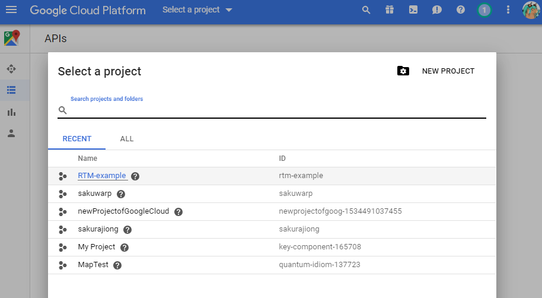
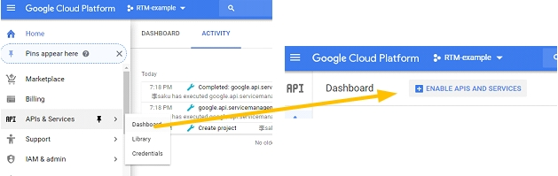
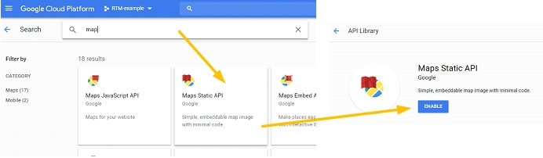
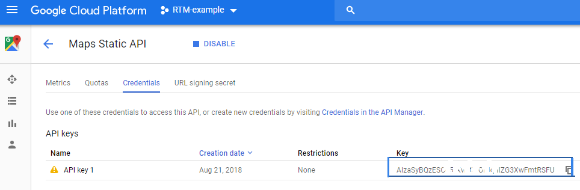
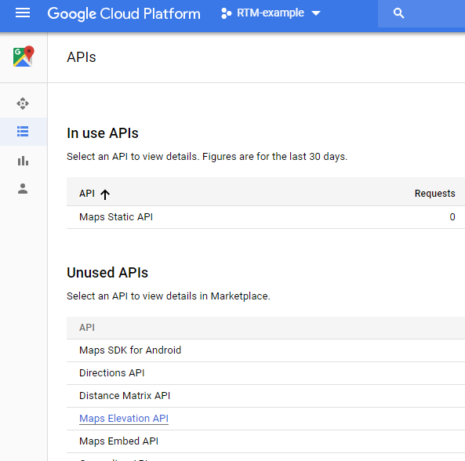
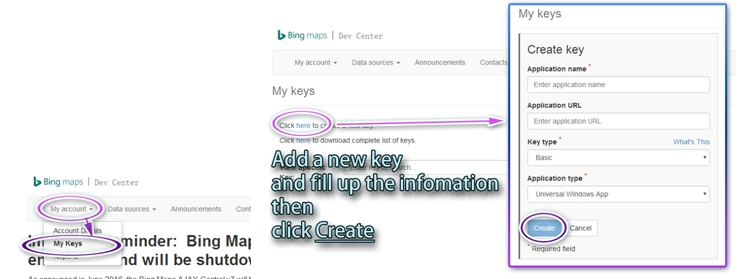
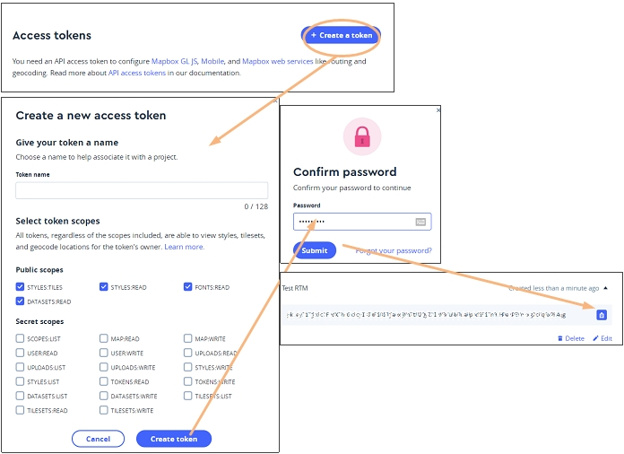

Get Your API KEY/Access Token
Google:
You can get your API key here:https://developers.google.com/maps/documentation/elevation/start
https://developers.google.com/maps/documentation/static-maps/
or Go to your Google cloud console.
https://console.cloud.google.com
Go to your Google cloud console, and generates a generic, unrestricted API key.
1. Create a new project.

2. Open your dashboard and enable APIs and services.

3. Find the staticmap API and enable it.

4. Select URL signing secret and copy your current secret key.

5. Find the Elevation API and enable it. Paste your key to the Google ELE and Staticmap key fields.

according to the new Google API limits, you may need to enable billing for a higher quotas.
read this article for more information.
https://developers.google.com/maps/documentation/elevation/get-api-key
Bing:
Access this URL
https://www.bingmapsportal.com/
1. Open the Bing Dev center page and sign in.
2. My account, My keys.


Paste your own key to the right fields. It will download the data from the data source you selected.
Mapbox:
Sign in and to your account page.
https://www.mapbox.com/account/

Go to My account, create a token. It's ok to use the default setting or uncheck all the box.

Your API keys will be listed under the Access token panel.
You can change the data source option and API keys at anytime, click save or apply to confirm the changes.